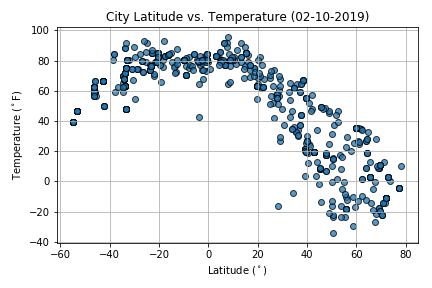
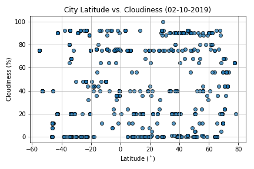
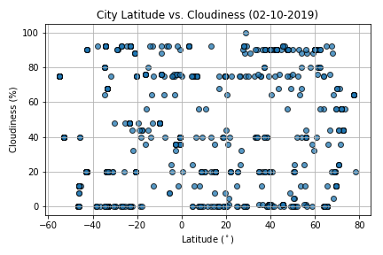

Max Temperature
Conventional wisdom prevails; temperatures increase as we reach proximity to the equator. This impact is seen in full effect in the distribution of temperatures displayed here.
Visualisations

 
